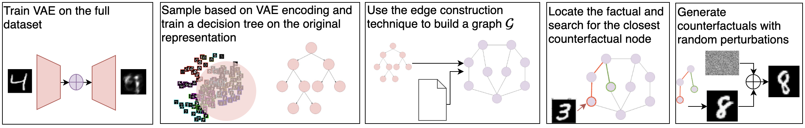
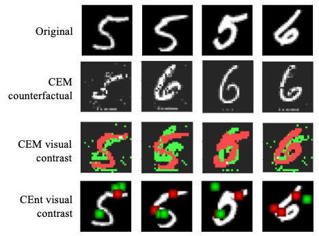
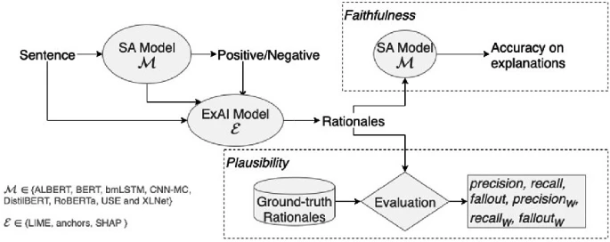
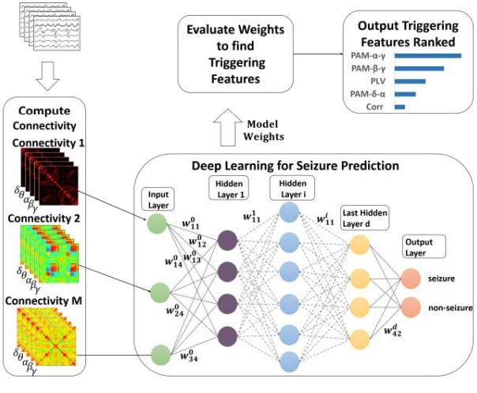
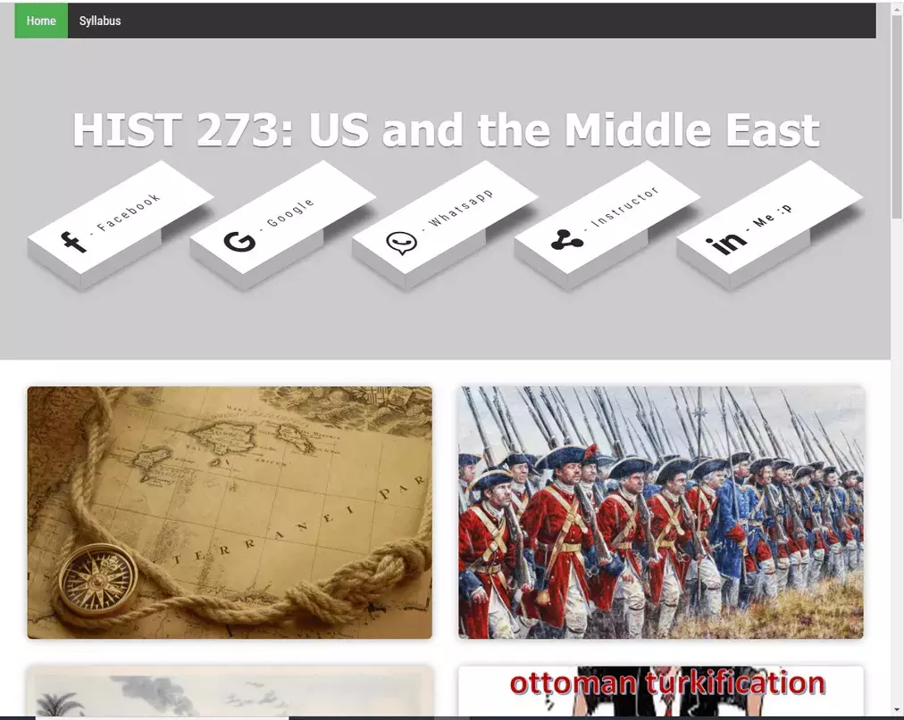
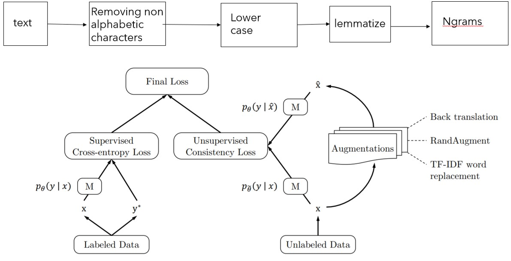
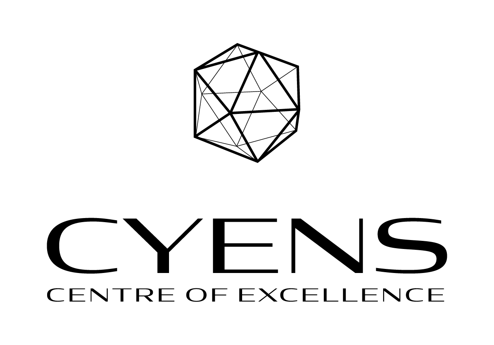

Personal page · Revised 5 November 2026
Mohamad Mansour
Email moemansour03@gmail.com GitHub mohamadmansourX Scholar profile LinkedIn mohamadmansourx X @MoeMansour0
Abstract
I build and study machine learning systems, mostly in Beirut. Most of my research has been on explainability: methods that say why a classifier decided what it did, and ways to check whether such explanations can be trusted. Two papers came out of that work with Julia El Zini and Mariette Awad at the American University of Beirut. CEnt searches for the smallest feasible change to an input that flips a model's decision [1]. The second asks whether explanations of sentiment classifiers are faithful to the model and plausible to people [2]. Before that I worked on seizure detection from EEG, with a model that ranks the connectivity features behind each prediction [3].
Other projects covered reinforcement learning for room navigation, text classification for reviews, document image processing, and a telescope for hunting comets, drawn up for the 2023 NASA Space Apps Challenge. I now work at Whish Money on internal AI projects.
Keywords explainable AI, counterfactual explanations, sentiment analysis, EEG, reinforcement learning, computer vision, OCR, PyTorch, TensorFlow
Now November 2026
I work at Whish Money on AI projects that are internal to the company. Nothing from this period is public, so the reference list below stops at 2023. The housing loan page in section 3 is the one public thing from this year.
Publications
-

Fig. 1 The CEnt pipeline, from the VAE to the counterfactuals. 
Fig. 2 MNIST digits: CEnt's visual contrast (bottom row) next to CEM's. Julia El Zini, Mohamad Mansour, Mariette Awad.1 CEnt: An Entropy-based Model-agnostic Explainability Framework to Contrast Classifiers’ Decisions arXiv:2301.07941, January 2023.
Given an input and any classifier, CEnt looks for the smallest feasible change that would flip the decision, while respecting features that cannot change. It fits a decision tree to the model near the input, scores the splits by entropy, turns them into a graph and walks the shortest path to the other side of the boundary. A VAE supplies the distances, so the proposed change stays close to real data. Benchmarked on the adult, COMPAS, Give Me Some Credit and HELOC tabular sets, with image examples on MNIST and Fashion MNIST and a text classifier.
arXiv code (MIT)BibTeX
@article{elzini2023cent, title = {CEnt: An Entropy-based Model-agnostic Explainability Framework to Contrast Classifiers' Decisions}, author = {El Zini, Julia and Mansour, Mohamad and Awad, Mariette}, journal = {arXiv preprint arXiv:2301.07941}, year = {2023} } -

Fig. 3 Faithfulness on the top path, plausibility on the bottom. Eight sentiment models, three explainers. Julia El Zini, Mohamad Mansour, Basel Mousi, Mariette Awad. On the Evaluation of the Plausibility and Faithfulness of Sentiment Analysis Explanations In Artificial Intelligence Applications and Innovations (AIAI 2022), IFIP AICT vol. 647, pp. 338–349. Springer, 2022.
Two questions about explanations of sentiment classifiers: do the extracted rationales actually drive the prediction (faithfulness), and do they match what people would point to (plausibility)? We collected human rationales for a small dataset and ran LIME, Anchors and SHAP over eight models, from a CNN and bmLSTM to BERT, RoBERTa and XLNet. Anchors sat closest to human judgment, and the transformers were easier to explain than the convolutional and recurrent models.
doi:10.1007/978-3-031-08337-2_28 arXivBibTeX
@inproceedings{elzini2022plausibility, title = {On the Evaluation of the Plausibility and Faithfulness of Sentiment Analysis Explanations}, author = {El Zini, Julia and Mansour, Mohamad and Mousi, Basel and Awad, Mariette}, booktitle = {Artificial Intelligence Applications and Innovations (AIAI 2022)}, series = {IFIP Advances in Information and Communication Technology}, volume = {647}, pages = {338--349}, publisher = {Springer}, year = {2022}, doi = {10.1007/978-3-031-08337-2_28} } -

Fig. 4 Connectivity features in, a seizure decision out, and a ranking of the features that triggered it. Mohamad Mansour, Fouad Khnaisser, Hmayag Partamian.1 An Explainable Model for EEG Seizure Detection based on Connectivity Features arXiv:2009.12566, September 2020.
Connectivity measures between EEG channels, directed and undirected, feed a network that decides whether a short window is seizure activity. Relevance is read off the trained weights and activations, which gives a ranking of the features behind each decision and a way to check it against what is already known about seizures.
arXivBibTeX
@article{mansour2020explainable, title = {An Explainable Model for EEG Seizure Detection based on Connectivity Features}, author = {Mansour, Mohamad and Khnaisser, Fouad and Partamian, Hmayag}, journal = {arXiv preprint arXiv:2009.12566}, year = {2020} }


Projects and code
- 2026 Housing loan helper English and Arabic
What a housing loan in Lebanon costs per month, who is lending at the moment (Banque de l’Habitat, PCH, the banks) and the rules, in plain words. One page, no backend, shareable links.
- 2023 StellarVisionX NASA Space Apps Challenge, team lead
A concept for a telescope that hunts comets from about 42 million km out from the Sun, with its cameras pointed sideways along the plane the planets and comets move in rather than out into deep space. Built over the October 2023 hackathon weekend with Ziad Farhat, Reem Zahreddine, Lucia Nassim and Kosay Darwish, two months after comet Nishimura was found by accident.
- Code Small tools on GitHub
Merge_COCO_FILES merges COCO annotation files and has 40 stars.3 SauvolaNet-Training is training code for image binarization, and TextBPN-Training extends the TextBPN text detector.
-
2021 Navigating Agent AUB and CYENS
Room navigation for embodied agents in Habitat, comparing combinations of reinforcement learning algorithms and training methods.
-

Fig. 5 The course site. Each tile is one lecture. 2021 HIST 273 course site AUBDuring Covid-19 the lecture recordings were in the cloud and finding one took a lot of searching. I built this page so my classmates and I could find them quickly.
-

Fig. 6 Preprocessing on top; the consistency loss from unsupervised data augmentation below. 2020 Extracting Insights AUB and AsurionClassifying reviews and extracting insights from them, using unsupervised data augmentation.


Affiliations
- Whish Money Now
- American University of Beirut research · [1] [2] [3]
-

CYENS Centre of Excellence research - United Nations ESCWA
- Tecfrac
- Oreyeon
- IPH Studios
Roles and dates are on LinkedIn.